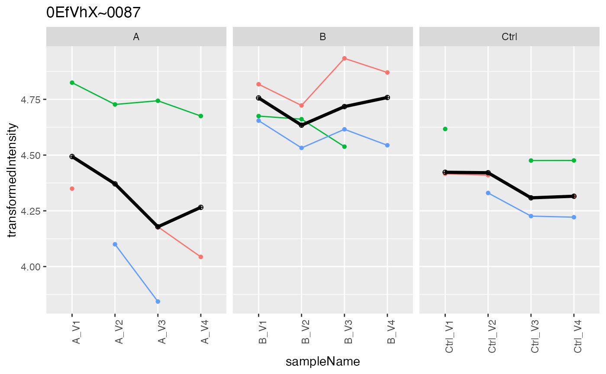
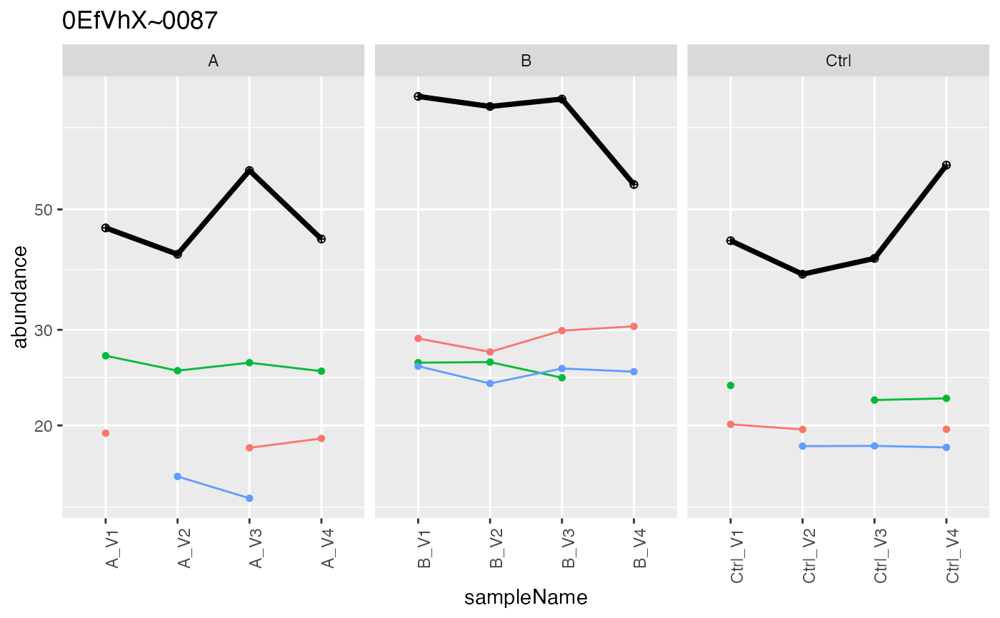
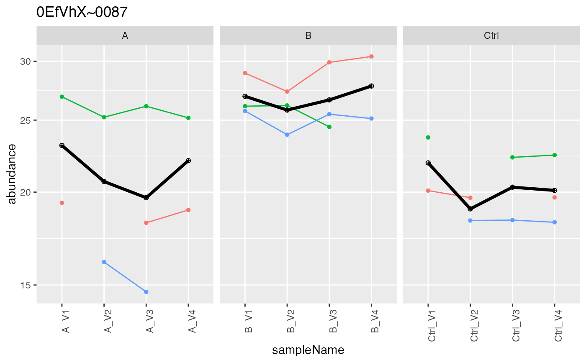
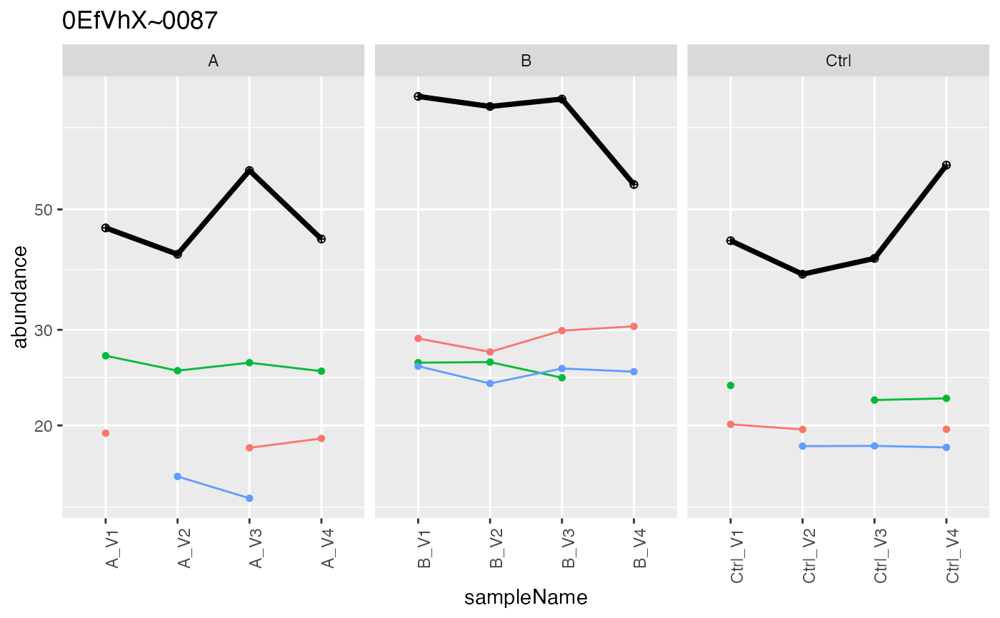
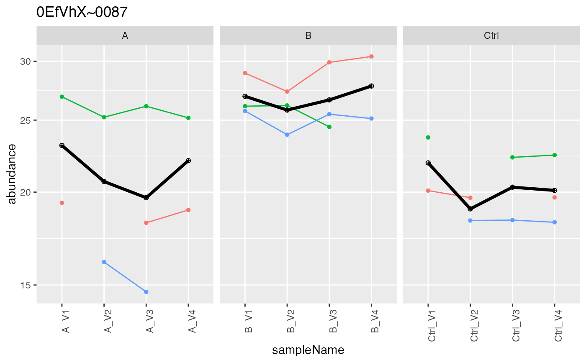

Decorates LFQData with methods to aggregate protein intensities aggregates intensities
Source:R/LFQData.R
LFQDataAggregator.RdDecorates LFQData with methods to aggregate protein intensities aggregates intensities
Decorates LFQData with methods to aggregate protein intensities aggregates intensities
See also
Other LFQData:
LFQDataPlotter,
LFQDataStats,
LFQDataSummariser,
LFQDataToSummarizedExperiment(),
LFQDataWriter,
LFQData,
RowAnnotProtein
Public fields
lfqLFQData
lfq_aggaggregation result
prefixto use for aggregation results e.g. protein
Methods
Method medpolish()
aggregate using median polish
Method plot()
creates aggreation plots
Examples
istar <- prolfqua_data('data_ionstar')$filtered()
#> Column added : nr_peptide_Id_IN_protein_Id
data <- istar$data |> dplyr::filter(protein_Id %in% sample(protein_Id, 100))
lfqdata <- LFQData$new(data, istar$config)
lfqTrans <- lfqdata$clone()$get_Transformer()
lfqTrans$log2()
#> Column added : log2_peptide.intensity
lfqTrans <- lfqTrans$robscale()$lfq
#> data is : TRUE
#> Joining, by = c("protein_Id", "sampleName", "peptide_Id")
lfqAggregator <- LFQDataAggregator$new(lfqTrans, "protein")
lfqAggregator$medpolish()
#> starting aggregation
pmed <- lfqAggregator$plot()
pmed$plots[[2]]
#> Warning: Removed 54 rows containing missing values (geom_point).
#> Warning: Removed 14 row(s) containing missing values (geom_path).

lfqAggregator$lmrob()
#> starting aggregation
#> Warning: 'rlm' failed to converge in 20 steps
#> Warning: 'rlm' failed to converge in 20 steps
prob <- lfqAggregator$plot()
prob$plots[[2]]
#> Warning: Removed 54 rows containing missing values (geom_point).
#> Warning: Removed 14 row(s) containing missing values (geom_path).
 lfqCopy <- lfqdata$clone()
lfqCopy$is_transformed()
#> [1] FALSE
lfqAggregator <- LFQDataAggregator$new(lfqCopy, "protein")
lfqAggregator$sum_topN()
#> Joining, by = c("protein_Id", "peptide_Id")
#> Columns added : srm_meanInt srm_meanIntRank
pSum <- lfqAggregator$plot()
pSum$plots[[2]]
#> Warning: Transformation introduced infinite values in continuous y-axis
#> Warning: Transformation introduced infinite values in continuous y-axis
#> Warning: Removed 54 rows containing missing values (geom_point).
#> Warning: Removed 14 row(s) containing missing values (geom_path).

lfqAggregator$mean_topN()
#> Joining, by = c("protein_Id", "peptide_Id")
#> Columns added : srm_meanInt srm_meanIntRank
pMean <- lfqAggregator$plot()
pMean$plots[[2]]
#> Warning: Removed 54 rows containing missing values (geom_point).
#> Warning: Removed 14 row(s) containing missing values (geom_path).
#> Warning: Removed 1 row(s) containing missing values (geom_path).
#> Warning: Removed 1 rows containing missing values (geom_point).
# lfqAggregator$write_plots(".")
protPlotter <- lfqAggregator$lfq_agg$get_Plotter()
protPlotter$heatmap()

lfqCopy <- lfqdata$clone()
lfqCopy$is_transformed()
#> [1] FALSE
lfqAggregator <- LFQDataAggregator$new(lfqCopy, "protein")
lfqAggregator$sum_topN()
#> Joining, by = c("protein_Id", "peptide_Id")
#> Columns added : srm_meanInt srm_meanIntRank
pSum <- lfqAggregator$plot()
pSum$plots[[2]]
#> Warning: Transformation introduced infinite values in continuous y-axis
#> Warning: Transformation introduced infinite values in continuous y-axis
#> Warning: Removed 54 rows containing missing values (geom_point).
#> Warning: Removed 14 row(s) containing missing values (geom_path).

lfqAggregator$mean_topN()
#> Joining, by = c("protein_Id", "peptide_Id")
#> Columns added : srm_meanInt srm_meanIntRank
pMean <- lfqAggregator$plot()
pMean$plots[[2]]
#> Warning: Removed 54 rows containing missing values (geom_point).
#> Warning: Removed 14 row(s) containing missing values (geom_path).
#> Warning: Removed 1 row(s) containing missing values (geom_path).
#> Warning: Removed 1 rows containing missing values (geom_point).
# lfqAggregator$write_plots(".")
protPlotter <- lfqAggregator$lfq_agg$get_Plotter()
protPlotter$heatmap()
